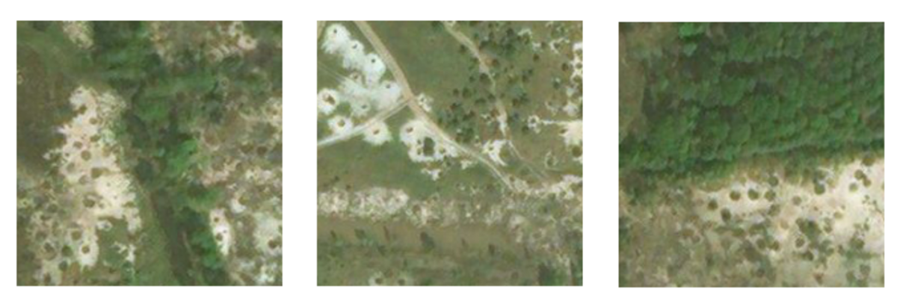
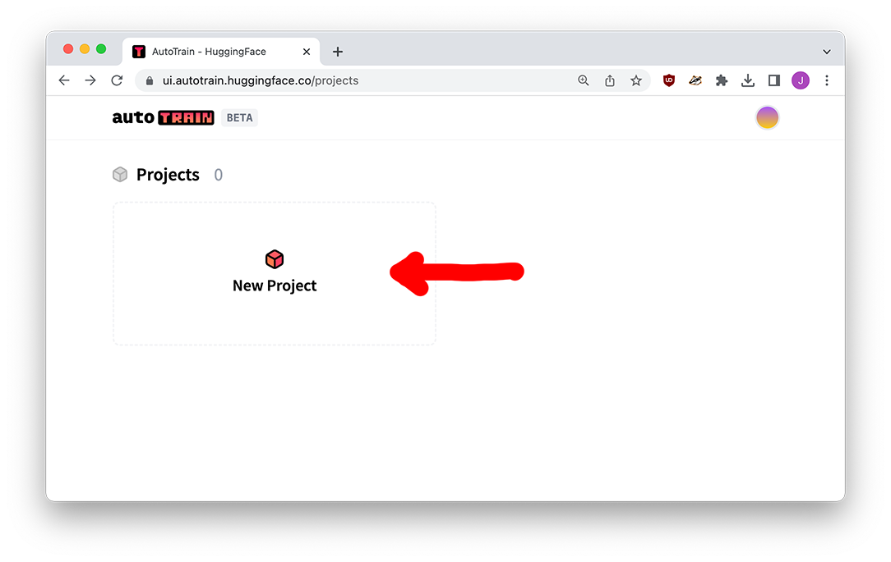
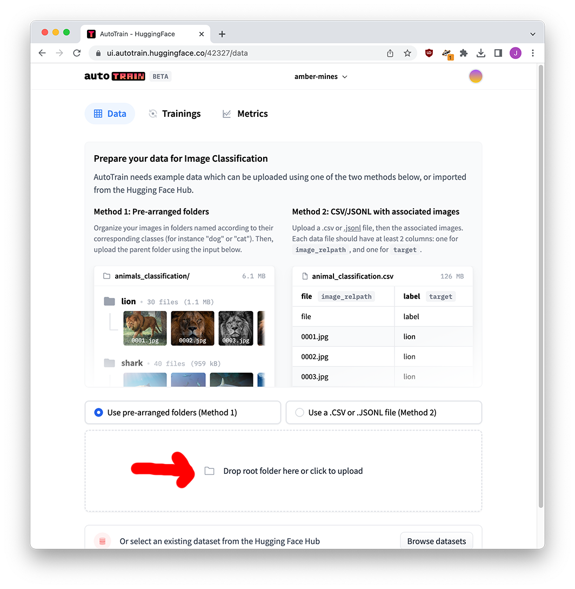
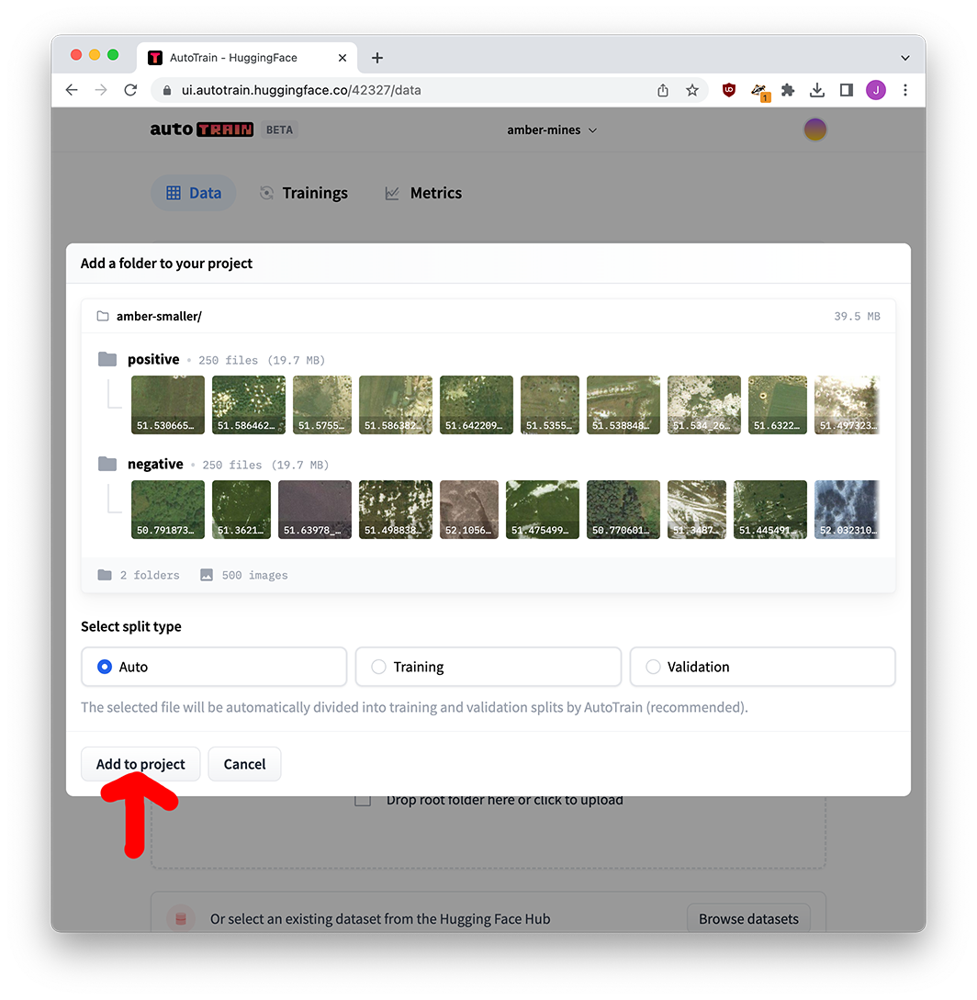
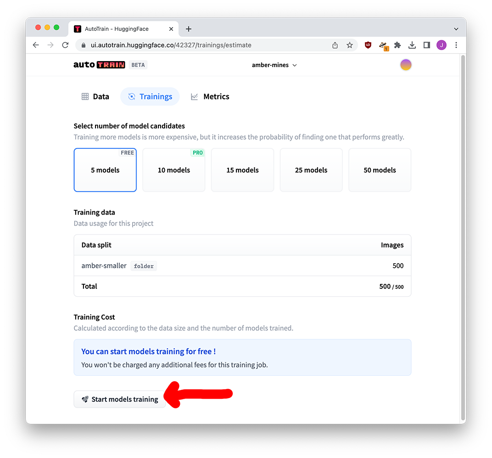
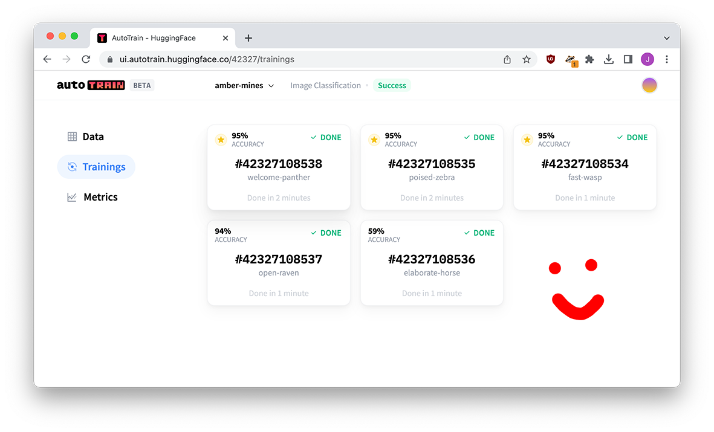
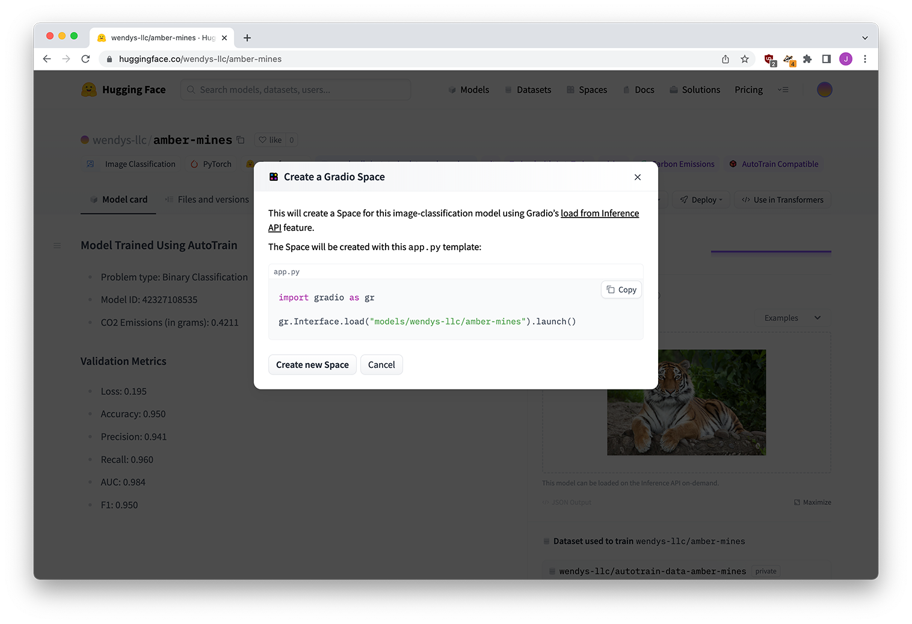

Before a model can make any decisions for you, it needs to be trained on how to make those decisions.
As we talked about in the last section, there are two approaches to teaching your model:
- Training a model from scratch
- Taking a model that already knows something (words, shapes, etc) and fine-tuning it
We’ll start by looking at how people used to do it, and now look at the insanely simple drag-and-drop ways you can do it nowadaays.
How training works
The olden days of machine learning
Back in the good old days of writing fun investigative machine learning algorithms, fine-tuning models was out of reach: you’d pretty much always plan out an algorithm yourself to dig through documents or recognize members of Congress.
You’d have to make decisions like: what kind of algorithm are we using? The algorithm is the baseline of our model, and determines exactly how it works. Maybe we’d use a random forest? Maybe naive Bayes or a support vector machine? You might not know the difference, but you’d notice when know one did a better job than the other!
Speaking honestly, you’d probably just try them all and use the one that performed the best, not really caring about the why.
Beyond picking the fundamentals of your model, you’d also need to make decisions about how your data was pre-processed before it was tossed in. You might make decisions like:
- Would you remove accents like coöperation and café?
- Would you standardized fish, fishes, and fishing to count as the same word?
- Should you keep your image in color or is greyscale going to work better?
While these sorts of choices can certainly play a role in building a model in the current world, you rarely have to do that any more. We’ve been freed from it!
Before we get too far, I just want to say I love traditional machine learning models. Knowing what’s going into the system, making a million little tweaks, and feature-engineering your way to high heaven is a great thing.
And as a secret bonus, traditional machine learning will oftentimes surpass AI-driven models with a heck of a lot less computational work.
The problem is all those tiny little decisions require technical know-how that raise the barrier to entry to these skills. The approach we take below will often reach 90% of the way there with 2% of the effort!
Fine tuning models
As we explained in the last section, training a model from scratch is like teaching a baby to speak. What if we could instead build from a base that was a little bit more advanced?
Maybe we could start with something that knows a little bit of English or French, maybe it understands what a circle is or what a tree looks like. All we’d need is to give it a little guidance oh how to use those skills for our problem, instead of home-schooling it into adulthood.
This is the process of fine-tuning, and it’s how the majority of AI and machine learning is done these days. Megacorps like Facebook, Google and Microsoft have shoveled the contents of the internet into gigantic, powerful models, burning an incredible amount of money, time, and electricity to train them in ways that we could never think of doing on our home computer.
These models know all kinds of things, and by leveraging them we’ve skipped past starting with a baby and gone to a fully-functioning adult!
This is probably the right place to say: yes, this is one of the reasons bias exists in these models. Being a fully-functioning adult doesn’t necessarily mean you’re always right, or your ideas make sense!
To fine-tune the model, you show the model examples of what you want it to do. It can be practically anything:
- Positive tweets vs negative tweets
- Pieces of legislature about the environment vs healthcare vs taxes vs policing
- Slides with tumors vs no tumors
- Photos with a box drawn around every single tree
Thanks to the beauty of machine learning, the model leverages its existing abilities to learn how to complete your task. Whether it’s categorizing documents or scoring tumors, that’s it!
Not all models are available for fine-tuning, though.
- Some models are held by the companies that produce them. They write papers about them but don’t release anything.
- Other models are held by the companies that produce them, but are available for fine-tuning through some sort of “give us money and we’ll give you access” interface
- Still other models exist freely on the internet, able to be downloaded and fine-tuned
We’re mostly concerned with the last bit here. And the best place to find those models is Hugging Face.
Let’s fine-tune a model!
We’re going to reproduce the research that’s (partially) behind Texty’s Leprosy of the land piece on illegal amber mines in Ukraine.
From their description of the project:
Increased world prices for amber led to illegal mining for this gemstone in North Western part of Ukraine. The total area of region with close-to-surface deposits of amber is about 70,000 km2. Number of images with good enough resolution needed to cover this area is about 450,000. To process such amount of information we developed XGBoost and ResNet based classifier, trained it with initial ground-truth images with traces of amber mining and created most complete interactive map of this phenomena as of time of publishing in March, 2018 [1].
You can find their methodology here, a simpler writeup here, or a reproducible walkthrough on Google’s infrastructure from Google News Initiative.
Our goal is to quickly fine-tune a model to reproduce the story. You’re going to be shocked at how easy it is.
The problem
With a collection of satellite imagery, we need to find pictures like those below.

See those little round things? Those are illegal amber mines. While we could spend nights and weekends scrolling through image after image looking for those little round bits, a computer is going to do a much better job of it. Specifically speaking, a fine-tuned computer vision model is going to do a better job of it.
Feel free to download the images here. It’s a subset of the much larger selection of well over a thousand images that the Google News Initiative course used.
Create our model
We’re going to head on over to Hugging Face’s AutoTrainer, a tool to allow users to easily fine-tune existing models. Once you’re there, create an account and log in.
We’re doing this using Hugging Face, but there are a million tools that you can use to automatically train or fine-tune models out there. Hugging Face is a great place to do it because it’s a platform dedicated to models. Unlike something like Google’s model-training tool, Hugging Face has a ton of infrastructure around it to allow you to test and use the model in a lot of convenient (and social!) ways.
Also: why are we using a tool instead of coding? Because the whole point of this is it doesn’t matter how the model is made. It’s fine that it’s a black box, it’s fine that we don’t know what’s going on under the surface or where it came from, what matters is focusing on how we use it. Being able to design a model from scratch in PyTorch or whatever doesn’t prevent you from being irresponsible with it!
Create a project
After you’re logged in, click the New Project button.

Create a new project, selecting Image Classification since we’re attempting to put images into categories. If we were attempting to classify tweets, we’d click Text and then one of the Text Classification options.

An important part of this screen is the Model choice option. Do you know anything about the different models we could fine-tune for this project? Are those “XGBoost” and “ResNet” things mentioned above by Texty relavant? Does RoBERTa from the last section speak images?
You don’t have to worry, because Hugging Face knows we don’t know, so it just picks for us. In the same way that traditional machine learning meant running a few different algorithms to see which one worked best - SVM vs logistic regression vs random forest – Hugging Face will pit a few contenders against each other and let us pick which one we feel performed the best!
Uploading our data
After you’ve created the new project, you’ll drag the two folders of images into the drop zone. There are 250 images in each folder because Hugging Face allows us to train on 500 images for free, and keeping a balance between yes/no amber mines lets the model get a good idea of what each category looks like.


That’s your data prep! Once it’s done uploading you can click the go to trainings button.
Training our models
AutoTrain now gives us a few options on what we want to do: we’re fine trying out 5 different models (expanding that probably won’t change much), and we’re just within the 500-image limit.
As much as I love it, Hugging Face is super expensive if you’re going over the limit. In that case I would recommend fine-tuning on Google Colab instead. It isn’t too bad if you know how to work with Python!
If we were training a model from scratch instead of fine-tuning, 500 images might not be enough! But thanks to the fact that we’re standing on the shoulders of an existing model that knows about shapes and colors, we should be ok. Start that training!

Wait a bit – have fun watching the models compete – and soon you’ll have five fine-tuned models all ready for you.

Evaluating model performance
Many of our models scored 95%, how exciting! But when we click through to the model, we get a lot more numbers to pay attention to.
I’m going to give you the numbers for a few of the models below:
| name | welcome-panther | poised-zebra | fast-wasp |
|---|---|---|---|
| Model base | beit | vit | swin |
| Loss | 0.073 | 0.195 | 0.144 |
| Accuracy | 0.950 | 0.950 | 0.950 |
| Precision | 0.979 | 0.941 | 0.979 |
| Recall | 0.92 | 0.960 | 0.920 |
| AUC | 0.999 | 0.984 | 0.989 |
| F1 | 0.948 | 0.950 | 0.948 |
The big reason accuracy might not be important is if you have “imbalanced” data. Let’s say we had 90 images of no mines and 10 images of mines. I could guess not a mine every single time and still come away with a 90% accuracy score! We need some way to punish certain kinds of wrong guesses.
Precision and recall are measures that talk specifically about the ways the model’s predictions can be wrong. The somewhat technical explanation:
- Higher precision means fewer false positives, i.e.. fewer times a non-mine is classified as a mine.
- Higher recall means fewer false negatives, i.e. fewer times a mine is classified as a non-mine.
Or, alternatively:
- High precision means “if I say YES it’s a mine, it’s definitely a mine.” Low precision means “if I say YES it’s a mine… maybe it isn’t.”
- High recall means “I guessed most of the mines,” while low recall means “I missed some of the mines.”
This page has a great decription of how tests can “cheat” and get misleading high scores, I highly recommend giving it a read (mostly the last third or so). But to get to the point:
While all of our models have an accuracy of 95%, welcome-panther has a higher precision and lower recall, while poised-zebra has a lower precision and higher recall. Which metric one is better?
In our situation, we’ll be manually reviewing the mines and we don’t want to miss any amber mines. It’s better for us to have a non-mine categorized as a mine (we’ll remove it) instead of a mine categorized as a non-mine (we’ll never notice it). As a result, we want a higher recall – it might give us false positives, but we’ll deal with it.
We could also use the F1 score, which attempts to be a holistic store that balances all types of misclassifications. In this case our pick of poised-zebra with a score of 0.950 slightly beats out welcome-panther’s score of 0.948, so it agrees with our decision!
Using our model
Next I use the settings page to rename and move our model. Now that I’ve made it publish, you can find it at wendys-llc/amber-mines You might want to keep yours private, but I wanted you to be able to give mine a try!
Now I’ll deploy the model as a Gradio app for some nice fun playing around.

And then we’re done!
Try it out
You can find the finished app here and try it out below.
Am I cheating by using examples that it was trained on? Absolutely, but you get the idea.
Were you to actually want to use this for real, I would recommend taking a look at the Hugging Face course